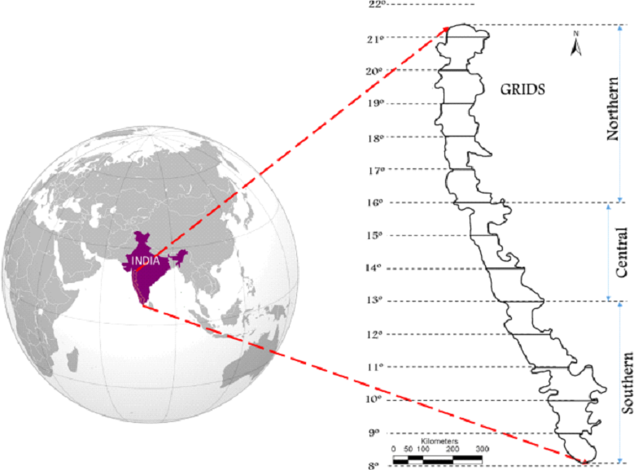
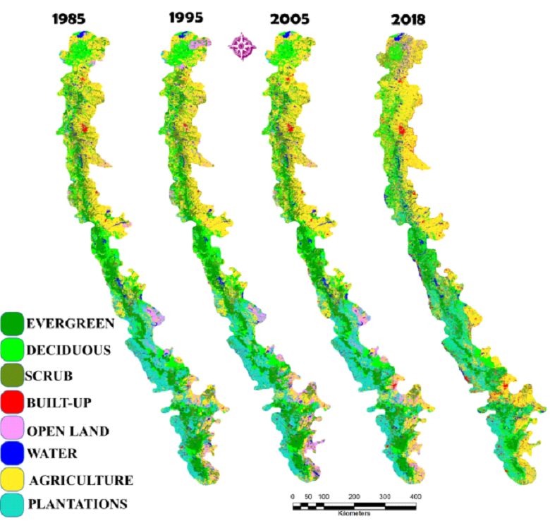
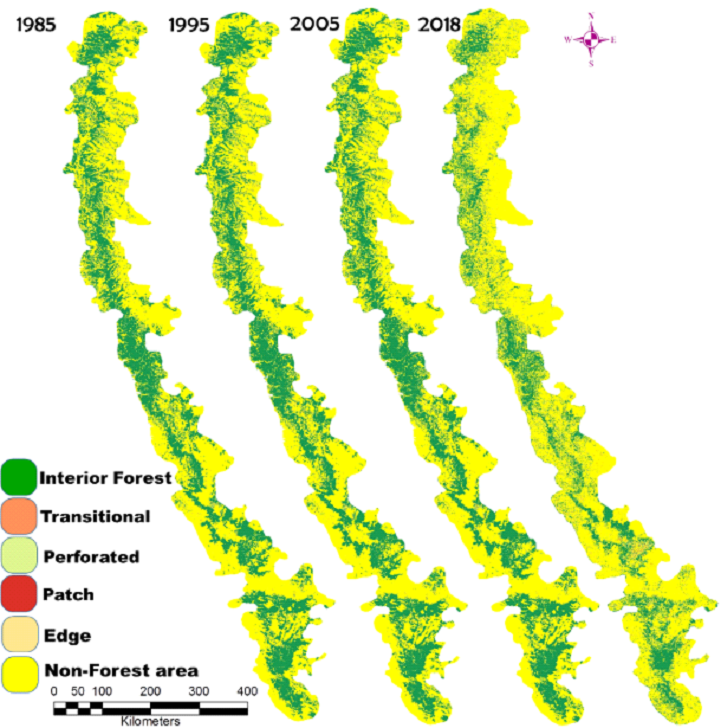
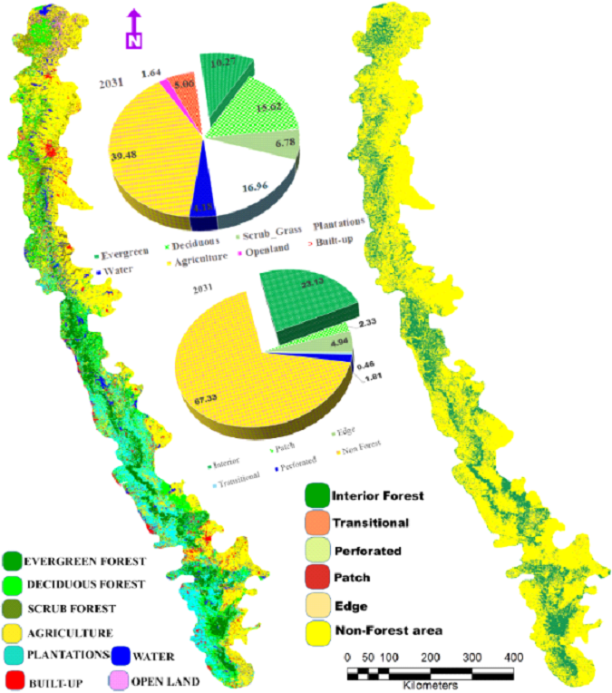
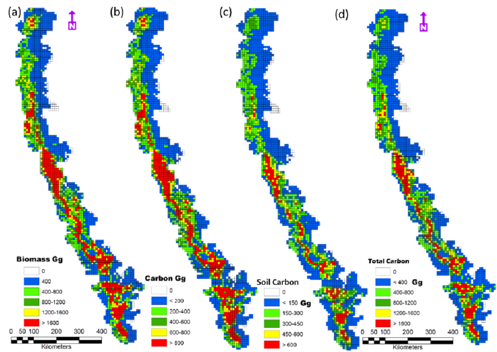

|
Introduction
Global warming with the burgeoning anthropogenic greenhouse
gas
(GHG) emissions (400 parts per million from 280 ppm CO2
emissions of pre-industrial era) has been altering the climate,
eroding the ecosystem productivity and sustenance of water,
affecting the livelihood of people. The anthropogenic activities
such as burning fossil fuel, power generation, agriculture,
industry, polluting water bodies and urban activities are
responsible for increasing GHG footprint of which 72% constitute
CO2. GHG footprint needs to be in balance with sequestration of
carbon to sustain ecosystem functions. Forests are the major
carbon sinks (about 45%) that aid in mitigating global warming
[1, 2].
The land use land cover (LULC) dynamics leading to
deforestation
and land degradation is the prime driver of global warming due
to the loss of carbon sequestration potential as well as
emissions. The Western Ghats (Fig 1) are one among 36 global
biodiversity hotspots and forests in this region sequester
atmospheric carbon, which aid in moderating the global climate.
The region is endowed with 4,600+ species of flowering
plants
(38% endemics), 330 butterflies (11% endemics), 156 reptiles
(62% endemics), 508 birds (4% endemics), 120 mammals (12%
endemics), 289 fishes (41% endemics) and 135 amphibians (75%
endemics). It covers an area of approximately 160,000 sq. km and
extends from 8° N to 21° N latitudes and 73° E to 77° E
longitudes. It is considered as a water tower of India due to
numerous streams originates and draining millions of hectares.
The rivers of WG sustains water ensuring water and food security
of 245+ million people in the peninsular Indian states. The
region has tropical evergreen forests, moist deciduous forests,
scrub jungles, sholas, savannas including the high rainfall
savannas of which 10% of the forest area is under legal
protection.
The land use (LU) dynamics was assessed using temporal
remote
sensing data of Landsat 8 Operational Land Imager (OLI-30 m
resolution) 2018 data integrated with field estimations and
decadal land use (1985, 1995, 2005-100 m resolution) available
from International Geosphere-Biosphere Programme (IGBP). The
collateral data included the vegetation maps developed by French
institute Puducherry, topographic maps (the Survey of India) and
virtual earth data (Google Earth, Bhuvan). The carbon
sequestration potential of forest ecosystems was assessed based
on (i) published literature based on the standard biomass
experiments and (ii) field based measurements collected across
the forests of WG of Karnataka using transect based quadrat
sampling techniques [1, 2].
The spatiotemporal LU analyses presented in Fig. 2,
highlights
the loss of forest cover due to anthropogenic pressure. The
region had 16.21% evergreen forest cover in 1985, which is
reduced to 11.3% in 2018. The region has 17.92%, 37.53%, 4.88%
under plantations, agriculture, mining and built-up
respectively. The increase in monoculture plantations such as
Acacia, Eucalyptus, Teak, Rubber, developmental projects and
agriculture expansions are the major drivers of LU changes. The
region has lost 12% of interior (contiguous) forest cover during
1985 to 2018 with an increase of non-forest cover (11%). The
interior forests (25% in 2018) are confined to major protected
areas; edge forests are becoming more prominent due to sustained
anthropogenic pressure (Fig. 3). Goa has experienced loss of
large tracts of interior forest cover due to the indiscriminate
rampant mining activities. The simulated LU (of 2018) was
compared with the actual LU’s (of 2018), which shows a
consistent result evident from higher accuracies (92.6%) and
overall kappa (K(overall): 0.91, K(histo): 0.95, K(location):
0.95). The projected LU of 2031 (Fig. 4) highlights likely loss
of evergreen forest with increases in agriculture cover (39%)
and built-up area (5%) [1]. The large scale changes of
agriculture and built-up cover are noticed as per Fig. 4, in the
eastern Kerala, Tamilnadu, Maharashtra states of WG. The
evergreen forest cover will only be 10% of the WG by 2031, which
would threaten the sustenance of water and other natural
resources [3, 4], affecting the food security and livelihood of
people in the peninsular India.

Fig. 1 Study Area-Western Ghats, India
|

Fig. 2 LU analyses of WG from 1985-2018
|

Fig. 3 Forest fragmentation from 1985-2018
|

Fig. 4 Likely LU and fragmentation of WG by 2031
|

Fig. 5 Above ground biomass (standing biomass),
carbon, soil
carbon content and total carbon stock of WG
|
Carbon sequestration: The carbon sequestration potential of WG
has been quantified, which confirms that the forests of WG are
incredible reservoirs of biomass and carbon stock (1, 5, 6),
highlighting the critical role of forests in lowering
atmospheric carbon (emitted due to anthropogenic activities) and
mitigation of global warming. The above ground biomass (AGB) in
WG is about 1.62 MGg (Million Giga Grams or Tera metric tons or
Tt) with the sequestered carbon of 0.81 MGg per year
respectively, which are reflected spatially across WG in Fig. 5a
and Fig. 5b respectively. The southern and central WG regions
endowed with the rich native forests have biomass > 1200 Gg/Ha
and carbon 600 Gg/Ha. The soils are rich in carbon (0.42 MGg)
especially southern and central WG, evident from Fig. 5c. The
total carbon captured by WG forests given in Fig. 5d, above
ground biomass and soil is 1.23 MGg. The annual incremental
biomass of 62869.11Gg with the carbon capture of 31434.55 Gg
with the higher carbon sequestration potential in southern WG.
Similar trend is noticed in the incremental carbon captured by
soil 15120 Gg and higher carbon content increment per year is
noticed in Karnataka and Central Kerala parts of WG. The total
incremental carbon excluding carbon loss through productivity is
accounted to be 37507.3 Gg. The likely changes in carbon
sequestration potential in the WG is estimated considering
simulated LU’s considering (a) conservation scenario and (ii),
business as usual scenario. The business as usual scenario (with
the current trend of decline of forest cover due to LU changes)
depicts the above ground biomass of 1.3 MGg with stored carbon
of 0.65 MGg and soil carbon of 0.34 MGg.
Table 4. Carbon emission across the states of WG
| State/UT |
CH4 Emission (CO2 equivalent) |
CO Emission (CO2 equivalent) |
CO2 Emission |
Total (Gg) |
Carbon storage in WG (Gg) per year |
State/UT |
| Goa |
233 |
337 |
3881 |
4451 |
872 |
20 |
| Gujarat |
15546 |
14498 |
79138 |
109182 |
872 |
20 |
| Karnataka |
15662 |
15239 |
54337 |
85237 |
10401 |
12 |
| Kerala |
3167 |
6108 |
26047 |
35321 |
7617 |
22 |
| Maharashtra |
23129 |
26497 |
105260 |
154886 |
11020 |
7 |
| Tamil Nadu |
15761 |
19190 |
71107 |
106058 |
5375 |
5 |
| Dadra & Nagar Haveli |
46 |
63 |
1458 |
1567 |
601 |
38 |
| Total Emission (Gg) |
|
|
|
496703 |
37833 |
8 |
Carbon Footprint: Carbon footprint is contributed by emissions
from
the energy sector (68%), agriculture (19.6%), industrial processes
(6%), LU change (3.8%) and forestry (1.9%) respectively in India
with CO2 emissions of about 3.1 MGg (2017), and the per capita CO2
emissions of 2.56 metric tonnes. Carbon emissions from major
metropolitan cities of India is about 1.3 MGg contributed by major
cities such as Delhi (38633.20 Gg) Greater Mumbai (22783.08 Gg),
Chennai (22090.55 Gg), Bengaluru (19796.6 Gg), Kolkata (14812.1 Gg)
Hyderabad (13734.59 Gg) and Ahmedabad (6580.4 Gg) from energy,
transportation, industrial sector, agriculture, livestock management
and waste sectors per year [5].
Ecologically fragile WG has been playing the pivotal role of
mitigating carbon footprint with the potential to sequester carbon
emission of all southern Indian cities and 1.62% of the total CO2
emissions from India. The total emissions from WG states accounted
to be 352922.3 Gg (Table 4) and forests of WG have the ability to
sequester 11% of the emissions, which highlights vital carbon
mitigation role and moderating climate. India has committed at the
Paris Climate Change Agreement to reduce its the emissions by 33-35%
by 2030, which necessitates immediate implementation of carbon
capture (with afforestation of degraded landscapes with native
species, regulations of LULC changes) and de-carbonisation (through
large scale implementation of renewable and sustainable energy
alternatives) through stringent norms towards (i) protection of
ecologically fragile regions, (ii) dis-incentives for continued
higher emissions based on ‘polluter pays’ principle, (iv) adoption
of cluster based decentralized developmental approaches and (iii)
incentives for reduced emission. The carbon trading has demonstrated
the potential in monetary values across the globe of Indian forests
in capturing carbon and the forest ecosystems in the WG are worth
INR 100 billion ($1.4 billion) at $30 per tonne. The carbon credit
mechanism and streamlining stakeholder’s active participations,
would dramatically reduce the abuse of forests and encourage farmers
to grow trees and converting the land to its next best use [1-4].
Water and food security towards sustainable and healthy living:
Ecologically fragile Western Ghats through perennial streams and
rivers has been ensuring water and food security in the peninsular
India. Alterations of landscape structure in the catchment areas
influences the hydrological regime leading to variations in the
hydrological status, which is evident from the occurrence of
perennial streams compared to the intermittent or seasonal streams
in the catchment dominated by degraded forest patches in the Western
Ghats. The streams are perennial when its catchment is dominated by
vegetation (> 60%) of native species. This is mainly due to
infiltration or percolation in the catchment as the soil is porous
with the presence of native species. Diverse microorganisms interact
with plant roots and soil helps in the transfer of nutrients from
the soil to plants and the soil is porous. Analyses of soil sample
from the catchments of perennial, intermittent streams reveal that
soils in the perennial streams catchment has the highest moisture
content (61.47 to 61.57%), higher nutrients (C, N and K), lower bulk
density (0.50 to 0.57 g/cc). Compared to this, catchment of
intermittent and seasonal streams had higher bulk density (0.87 –
1.53 g/cc) and relatively lower nutrients [3]. The analyses provides
insights of the role of forests with native species in maintaining
the hydrological regime while sustaining the local demand, which is
useful in the watershed (catchment / basin) management by the
respective government agencies. Fragmented governance and the
deteriorating ecological ethics with the lack of vision among the
decision makers are the principal reasons of deforestation and land
degradation.
A comparative assessment of people’s livelihood with soil water
properties and availability of water reveals that streams with its
catchment dominated by native species vegetation (> 60%) have higher
soil moisture and groundwater in comparison to the catchment (of
seasonal stream) during dry spell of the year. The higher soil
moisture due to the availability of water during all seasons
facilitates farming of commercial crops with higher economic returns
to the farmers, unlike the farmers who face water crisis during the
lean season. This emphasizes the need for conservation endeavour
towards maintaining native vegetation in the catchment, highlighting
its potential to support people’s livelihood with water conservation
at local and regional levels. Plantation crops (viz. areca nut,
coconut, banana, beetle leaf and pepper) are the major income
generating products in the catchment of perennial streams. A total
amount of Rs. 3,11,701 ha-1 yr.-1 (year 2009-10) gross average
income was generated from the plantation crops against an average
expenditure of Rs. 37,043 ha-1 yr.-1, (mainly for plantation
maintenance), yielding a net profit of Rs.2,74,658 ha-1 yr.-1. On
the contrary, for the catchment of seasonal streams, (where both
plantation and rice fields were considered for income calculation)
the average gross income generated was Rs. 1,50,679 ha-1 yr.-1
against expenditure of Rs. 6474.10 ha-1 yr.-1 for maintenance and
field preparation. This emphasises that sustenance of water in a
river ensures the food security in the region which is dependent on
the land use dynamics (forest vegetation cover) in its catchment.
Thus, catchment integrity plays a decisive role in sustaining water
for the societal and ecological needs, evident from the occurrence
of perennial streams in the catchment dominated by native flora,
highlighting the riverscape dynamics with the hydrological,
ecological, social and environmental dimensions linkages and water
sustainability [3, 4]. This provides invaluable insights to the need
for integrated approaches in the river basin management in an era
dominated by mismanagement of river catchment with the enhanced
deforestation process, inappropriate cropping and poor water
efficiency. The premium should be on conservation of the remaining
native forests, which are vital for the water security (perennial
streams) and food security (sustenance of biodiversity). There still
exists a chance to restore the lost natural forests through
appropriate conservation and management practices. Current managent
practices adopted by 20th century decision makers have been
contrbuting to the erosion of water retention capability in the
catchment with severe water scarcity, evident from 180 to 279
districts in the country reeling under droughts during the last
three consecutive years. An increase of mean temperature by 0.5 0C
and decline of rainy days in the Western Ghats highlights of the
imminent changes in the climate with the global warming due to the
increase in carbon footprint with the deforestation or reduction in
de-carbonisation mechanisms.
The Western Ghats with the spatial extent of 1,60,000 sq.km
constitutes only 4.86% of India’s geographical area (3,287,263
sq.km) and about 1.94% (64000 sq.km) in WG are ecologically
sensitive, which plays a decisive role in sustaining the water for
crop cultivation in 100 million hectares in the peninsular India.
Recent unfortunate instances of floods and subsequent drought
(drying up of water bodies) in Karnataka, Maharashtra and Kerala is
a pointer towards the mismanagement of forests in the region. The
region witnessed higher quantum of precipitation in shorter duration
and as the catchment had lost the capability to retain water (due to
deforestation) through infiltration, most of the rain water moved
towards ocean as overland flow resulting in scarcity of water
immediately after the rainy days and also loss of life and property
with the mudslides, etc. Hence, ecologically fragile regions such as
Western Ghats needs to be conserved on priority to sustain the
agriculture and horticulture in the peninsular India and support the
economy to realise the status of developing country with the healthy
citizen and 5 trillion dollar economy by 2025. Lopsided
developmental approaches driven by land, wood and water mafia will
only drain the nation’s economy with the recurring instances of
floods and droughts.
|